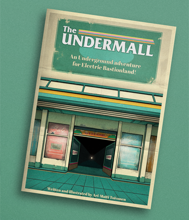
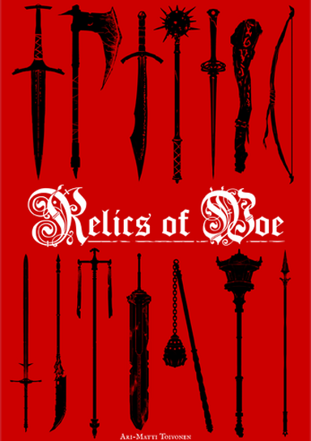
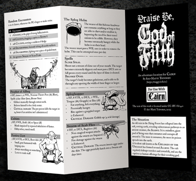

RPG Products

The Undermall is a compact mall-crawling and treasure-hunting location meant to be used with the system and setting of Electric Bastionland by Chris McDowall (www.bastionland.com). It is a surreal, anachronistic location of an abandoned shopping mall that the Underground has given a strange life of its own. It is low-prep, and easy to drop into any Borough in Bastion. Meant primarily for one-shot adventures.
The Undermall
A venture orchestrated by the WhamHam Corporation, the Undermall was a failed attempt to expand their commercial interests downward, into the Underground. Whatever WhamHam hoped to achieve with the Undermall, the project soon proved to be completely unviable due to the unpredictable nature of the realm beneath. The mall complex was promptly abandoned by the company.
Nothing stays abandoned in the Underground for long, however.
Nothing stays abandoned in the Underground for long, however.
The Undermall is a compact mall-crawling and treasure-hunting location meant to be used with the system and setting of Electric Bastionland by Chris McDowall (www.bastionland.com). It is a surreal, anachronistic location of an abandoned shopping mall that the Underground has given a strange life of its own. It is low-prep, and easy to drop into any Borough in Bastion. Meant primarily for one-shot adventures.

For use with Cairn and Old-School Essentials.
Relics of Woe
Relics of Woe is a supplement for fantasy RPGs containing 20 relic weapons, magical artifacts with weighty pasts.
In this RPG supplement you will find:
- 20 Unique, illustrated magic weapons. Evocatively flavored, and easy to drop into most fantasy campaigns.
- Roleplay generators. The weapons come with unique conditions for sustaining their powers, making the PCs perform rituals or having them undertake significant tasks.
- Two versions included. There are versions for Cairn and Old-School Essentials. The weapons are easy to convert to most systems in the classic fantasy convention.
- Printable item cards. For handing out to your players.
For use with Cairn and Old-School Essentials.

Step into the hideous, muddy cult lair of the Children of the Unclean in this 2-page pamphlet adventure.
Warning: contains extreme crimes against hygiene.
For use with Cairn.
Praise be, God of Filth!
A ruin has collapsed into the soft, rotten earth, and opened subterranean pathways to an ancient creature. Around the creature, a repellent cult has formed, and is now kidnapping travelers and townsfolk as human offerings their terrible god.
Step into the hideous, muddy cult lair of the Children of the Unclean in this 2-page pamphlet adventure.
Warning: contains extreme crimes against hygiene.
For use with Cairn.